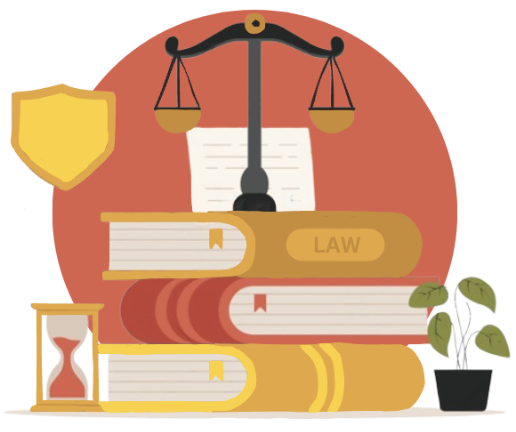

Legal Resources
Legal Aid
We understand the complexities and challenges that come with navigating the legal system after experiencing a hate crime. While we do not provide direct legal aid, we are dedicated to directing you to reputable legal resources and organizations that can offer the assistance you need. These resources include access to experienced attorneys, legal advice, and support services specifically geared towards helping victims of hate crimes. By connecting you with these professionals, we aim to empower you with the knowledge and representation necessary to seek justice and protect your rights. Reach out to us for recommendations on legal aid services and take the first step towards securing the legal support you deserve.
Victim’s Rights

We believe in empowering victims of hate crimes by informing them of their rights. Every victim has the right to be treated with dignity, respect, and sensitivity throughout the legal process. You have the right to report a crime without fear of retribution, to receive protection from the accused, and to be informed about the progress of your case. Additionally, victims are entitled to access support services to seek compensation for damages suffered as a result of the crime. Understanding your rights is the first step towards seeking justice and healing. There are resources available to support you every step of the way. Reach out to us to learn more about your rights and the assistance available to you.